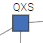

Welcome
Welcome to blockchain calm, a web app to interact with blockchains
Get Started
Start with something simple. A network with 3 or 4 nodes should be enough to show how a blockchain works.
Later on you can try to add more peers as well as deleting others.
The tool lets you choose the maximum number of collections allowed for every peer. So, with a bit of practice,
you will be able to build any topology you wish for your peer network.
When you publish a block (e.g.: Alice sends 100 to Bob) keep an eye on the screen to see how transactions get added in a blockchain
and how the chain is propagated through the network
The Peer Network
- A peer  represents a machine running the software that maintains the ever growing list of records (the blockchain)
- Each peer has a unique identifier (3 letter in our case) just like any computer on the Internet has an IP Address
- Peer-to-peer connections are shown through lines (edges of the graph)
- You can choose the maximum number of connections for any given peer
(2,3,5,8)
- You can terminate a peer at any time
- You can create a new peer at any time
- Nodes connect to other nodes randomly
- You can see the blockchain of any peer at any time
- The number in brackets on a peer tells you the length of its blockchain e.g.:
QXS(4)
Publishing a record
- You hit the broadcast to publish a random transaction (e.g Joe sends Alice 200) to a random peer.
- For sake of simplicity, a block contains one transaction only*
- First hit always sends the genesis block (in our case Joe receives 1000)
- You can send several transactions in one go (by hitting the button repeatedly) and observe different scenarios:
- Transaction might be rejected because the sender has not enough available money.
- Peers might build different chains and the consensus algorithm will dictate which chain lasts
The blockchain
- Every peer maintains its list of blocks: the blockchain
- The ledger is derived by traversing the blockchain.
- A transaction is made like this
{ sender: 'Joe', inputIndexes: [3,7], amount:100, receiver: { Alice:60,Joe:40 } }
- The array of input-indexes refer to indexes in the blockchain to prove the availability of unspent transactions
- If Joe wants to send Alice 60 and he is referring to unspent transactions for a total of 100 he needs to also send himself 40
- Transactions might be rejected due to lack of money from the sender (if you are lucky you might witness the double-spending problem in action)